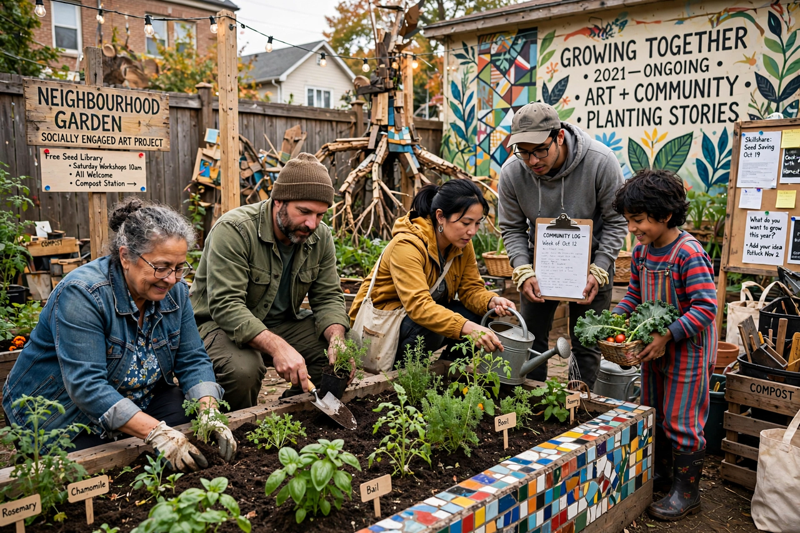

Social practice (art)
Social practice, also called socially engaged art, is an art form in which collaboration with communities and social interaction are the medium. Rather than producing objects for contemplation, social-practice artists organise meals, schools, gardens, housing projects, dialogues and protests, often over months or years, and often outside museums. The term gained currency in the United States in the 2000s, partly through university programmes such as California College of the Arts' social practice curriculum.

| Social practice | |
|---|---|
| Other names | Socially engaged art, participatory art, dialogical art |
| Influences | Relational aesthetics, community art, activist art, Paulo Freire's pedagogy |
| Key figures | Theaster Gates, Rick Lowe, Tania Bruguera, Suzanne Lacy, Pablo Helguera |
| Key text | Grant Kester, Conversation Pieces (2004) |
History
Social practice descends from several lineages: the community-arts movement, feminist performance, Joseph Beuys's notion of "social sculpture", and activist art. Rick Lowe's Project Row Houses (founded 1993) in Houston's Third Ward turned derelict shotgun houses into art spaces, housing and community services, becoming a canonical example. In Chicago, Theaster Gates's Dorchester Projects combined art, urban redevelopment and cultural programming on the South Side. Tania Bruguera's Immigrant Movement International in Queens offered practical services to migrants as an artwork of "useful art" (arte útil).
Debates
Debate centres on how such work should be judged. Grant Kester defends dialogical aesthetics — value found in the quality of exchange — while Claire Bishop has argued for retaining aesthetic and antagonistic criteria, warning against judging art solely by its ethics or social utility. Artists also face criticism that socially engaged projects can aestheticise poverty or serve gentrification, and institutions debate how to exhibit work whose "object" is a years-long process.
See also
Recreated from memory as part of the muse-webcrawl project.